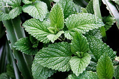
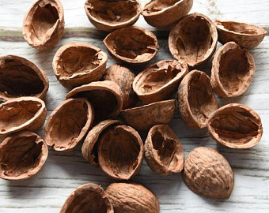

Паук вселяется в дом из-за загрязненности помещений,
наличия повышенной влажности и тепла в нем, которые
создают идеальные условия для жизнедеятельности насекомого.
Определив провоцирующий фактор, нужно использовать средства
от нашествия пауков в частный дом или их присутствия на улице.
У паука сильно развито обоняние, поэтому,
чтобы его отпугивать, необходимо создать
для насекомого неблагоприятные условия.
1. Непереносимые запахи
Паукам не нравится запах перечной мяты.
Если это растение посадить на даче,
то его благоухание защитит от проникновения насекомого.

Отделываться от членистоногих можно
также ароматом дробленой скорлупы
грецкого ореха, резким запахом краски или побелки.

2. Естественные враги
У пауков есть природные враги.
В основном предметы охоты - это птицы, мухи,
осы, лягушки, рыбы. Любят охотиться на мелких
насекомых и кошки. Если в квартире присутствует
такой домашний питомец, пауки исчезнут.
3. Ультразвук
Помогает справиться с проблемой такое
средство от пауков в квартире, как электрический
ультразвуковой отпугиватель. Это устройство
достаточно эффективно, но применять его нужно осторожно.